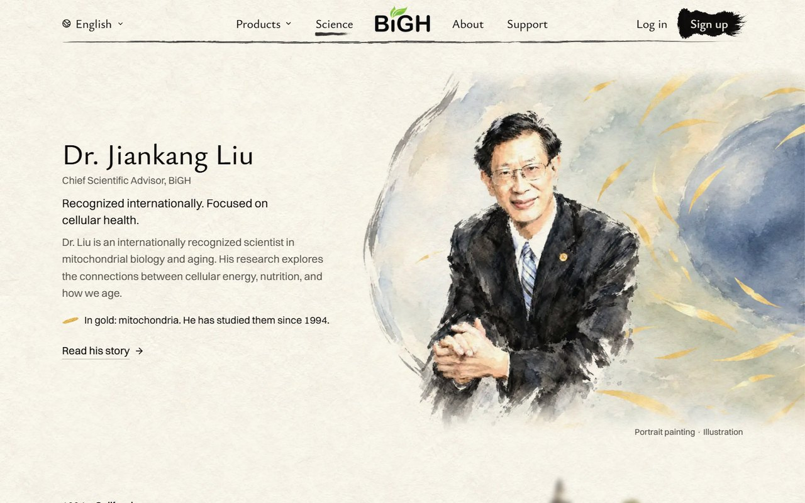
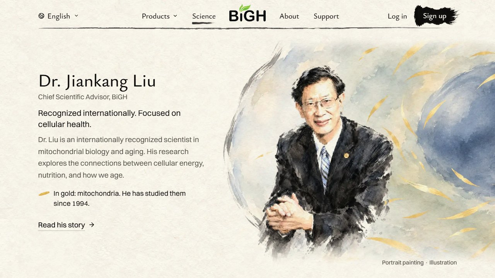
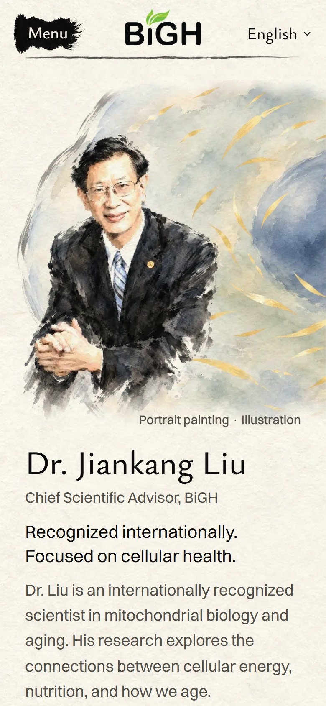
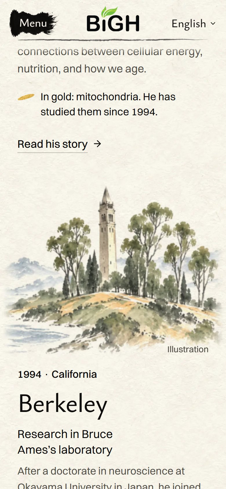
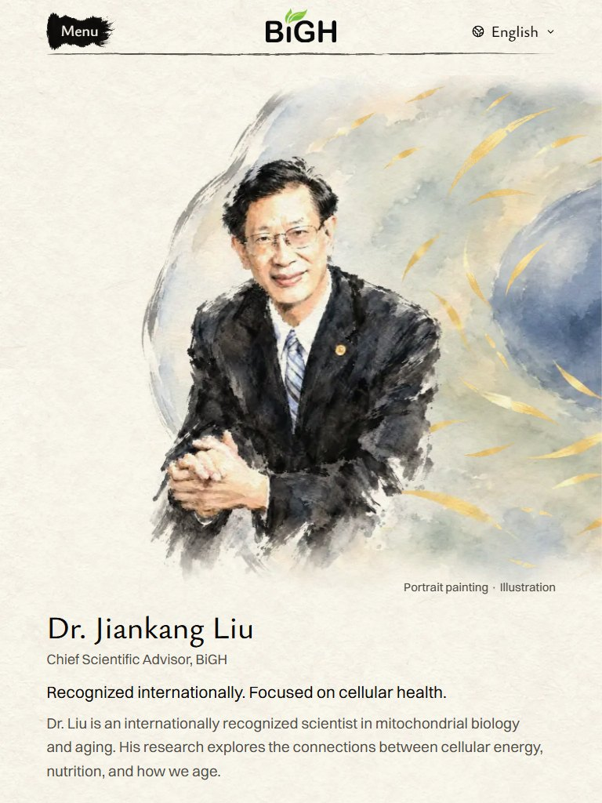
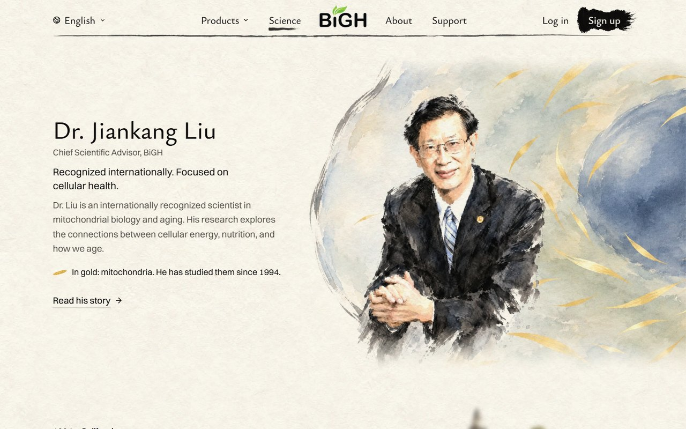
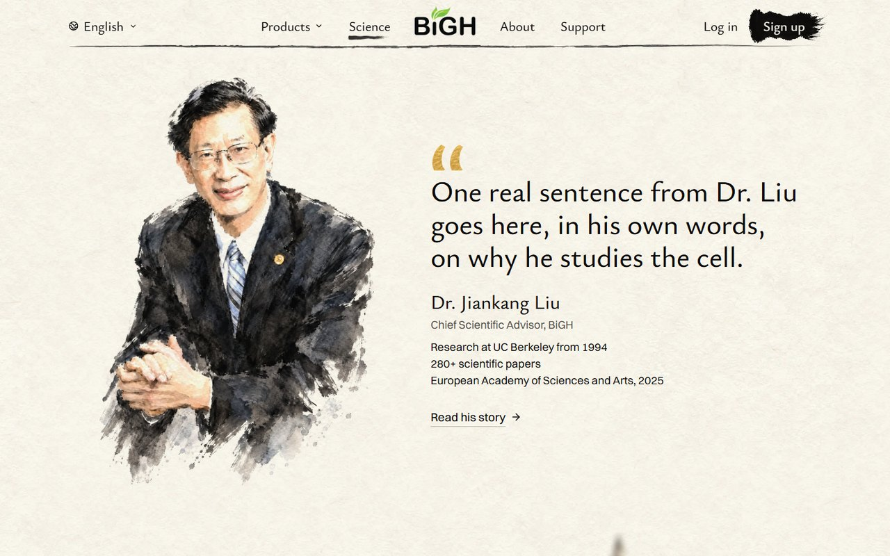
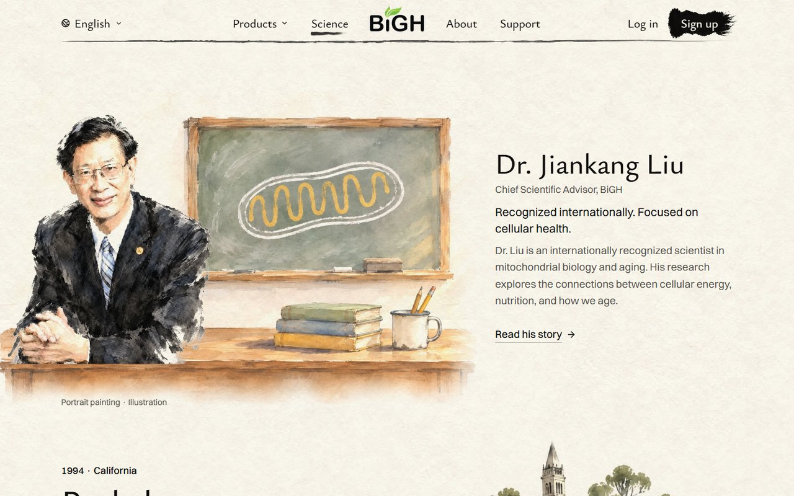

<title>Dr. Liu Mockups</title>
<meta name="claude:viewport-fit-sides" content="cover">
<link rel="stylesheet" href="https://fonts.googleapis.com/css2?family=Ysabeau:wght@500;600&family=Inter:wght@400;500;600&display=swap">
<style>
  /* Layout: one column of pictures, each idea a chapter: name, one line, the wide shot, the phone
     shots, three short notes. The site's own paper, ink and one gold, so the shots sit at home.
     One look on purpose (the shots are paper-coloured): every colour is set here. */
  :root {
    --paper: #f6f1e7;
    --card: #fbf8f1;
    --ink: #12110f;
    --muted: #55514a;
    --line: rgba(28, 27, 25, 0.18);
    --gold: #8a6717;
    --gold-soft: #ead9a8;
    --display: "Ysabeau", "Iowan Old Style", Georgia, serif;
    --text: "Inter", system-ui, -apple-system, "Segoe UI", Arial, sans-serif;
  }
  body {
    background: var(--paper);
    color: var(--ink);
    font-family: var(--text);
    font-size: 17px;
    line-height: 1.55;
    padding-block: 28px 64px;
    padding-left: max(16px, env(safe-area-inset-left, 0px));
    padding-right: max(16px, env(safe-area-inset-right, 0px));
  }
  main { display: grid; gap: 56px; max-width: 1120px; margin: 0 auto; }
  header { display: grid; gap: 10px; }
  h1, h2 { margin: 0; font-family: var(--display); font-weight: 500; line-height: 1.08; text-wrap: balance; }
  h1 { font-size: clamp(34px, 5vw, 52px); }
  h2 { font-size: clamp(28px, 3.6vw, 38px); }
  p { margin: 0; max-width: 62ch; }
  .lead { font-size: 19px; }
  .muted { color: var(--muted); }
  section { display: grid; gap: 18px; min-width: 0; }
  .head { display: grid; gap: 6px; }
  .letter { display: inline-grid; place-items: center; width: 1.55em; height: 1.55em; margin-right: 0.3em;
    border-radius: 50%; background: var(--ink); color: var(--paper); font-family: var(--text); font-size: 0.56em;
    font-weight: 600; vertical-align: 0.18em; }
  .pick { display: inline-block; margin-left: 10px; padding: 3px 10px; border-radius: 999px; background: var(--gold-soft);
    color: var(--ink); font-family: var(--text); font-size: 14px; font-weight: 600; vertical-align: 0.35em; }
  figure { margin: 0; display: grid; gap: 8px; min-width: 0; }
  figcaption { color: var(--muted); font-size: 14px; }
  .wide { overflow-x: auto; border: 1px solid var(--line); border-radius: 6px; background: var(--card); }
  .wide img { display: block; width: 100%; min-width: 700px; height: auto; }
  .phones { display: grid; grid-template-columns: repeat(auto-fit, minmax(240px, 340px)); gap: 16px; }
  .phones img { display: block; width: 100%; height: auto; border: 1px solid var(--line); border-radius: 6px; }
  dl { display: grid; gap: 10px; margin: 0; padding: 16px 18px; border-left: 3px solid var(--gold-soft); background: var(--card); }
  dl div { display: grid; gap: 2px; }
  dt { color: var(--gold); font-size: 14px; font-weight: 600; letter-spacing: 0.02em; }
  dd { margin: 0; max-width: 62ch; }
  .note, .verdict { display: grid; gap: 12px; padding: 22px 20px; border: 1px solid var(--line); border-radius: 6px; background: var(--card); }
  ul { margin: 0; padding-left: 1.15em; display: grid; gap: 6px; max-width: 62ch; }
  .films { display: grid; grid-template-columns: minmax(0, 1.85fr) minmax(0, 1fr); gap: 16px; align-items: start; }
  .films img { display: block; width: 100%; height: auto; border: 1px solid var(--line); border-radius: 6px; background: var(--card); }
  @media (max-width: 700px) { .films { grid-template-columns: minmax(0, 1fr); } .films .narrow { max-width: 340px; } }
  details { border-top: 1px solid var(--line); padding-top: 22px; }
  summary { cursor: pointer; font-family: var(--display); font-size: clamp(24px, 3vw, 30px); font-weight: 500; }
  summary:focus-visible { outline: 2px solid var(--ink); outline-offset: 4px; }
  details > .inner { display: grid; gap: 48px; margin-top: 28px; }
  @media (min-width: 760px) {
    body { font-size: 18px; }
  }
</style>

<main>
  <header>
    <h1>Dr. Liu: C is built</h1>
    <p class="lead">You picked C, the gold he studies. It is now built into the real Science page on this computer. It is not live.</p>
    <p class="muted">These are pictures of the built page, not mockups. His portrait is the painted one from NuriCell: his real face.</p>
  </header>

  <section aria-labelledby="built">
    <div class="head">
      <h2 id="built">The gold, moving</h2>
      <p>Seven seconds of the real page. The gold drifts a few pixels and turns a little. It rests when the painting is off screen.</p>
    </div>
    <div class="films">
      <figure>
        
        <figcaption>Desktop</figcaption>
      </figure>
      <figure class="narrow">
        
        <figcaption>Phone</figcaption>
      </figure>
    </div>
  </section>

  <section aria-labelledby="sizes">
    <div class="head">
      <h2 id="sizes">The built part, four window sizes</h2>
      <p>On a wide window his words stand on the bare paper at the left. On a phone the painting sits over the words.</p>
    </div>
    <figure>
      <div class="wide"></div>
      <figcaption>Desktop, 1440 wide. On a phone, slide the picture sideways to see all of it.</figcaption>
    </figure>
    <figure>
      <div class="wide"></div>
      <figcaption>Small laptop, 1280 by 720: the whole part fits one screen.</figcaption>
    </figure>
    <div class="phones">
      
      
      
    </div>
    <dl>
      <div><dt>Checked on the built site</dt><dd>All green: Science page 943 of 943 checks, homepage 288 of 288, menu 326 of 326. That covers ten window sizes, four other languages, reduced motion and no script.</dd></div>
      <div><dt>New words</dt><dd>One line: "In gold: mitochondria. He has studied them since 1994." It has draft translations in Korean, Japanese, Chinese and Vietnamese. No native speaker has read them yet.</dd></div>
      <div><dt>My score: 8.5 out of 10</dt><dd>It matches the mockup you picked, and the gold really moves now. What holds it back: 16 of the gold pieces drift on a desktop and the rest stay still (the ones he half hides, or the edge cuts). The painting is a little soft on a very sharp screen. And the cell is still the page's third.</dd></div>
    </dl>
  </section>

  <details>
    <summary>The ideas you chose from</summary>
    <div class="inner">
  <section class="note" aria-labelledby="face">
    <h2 id="face">One thing to know first</h2>
    <ul>
      <li>In D and E, Dr. Liu is painted new by the picture model, from his photo. It is not his real face any more.</li>
      <li>D looks more like him than E. He should judge both himself.</li>
      <li>I wrote your new rule into the repo: these stay mockups, and nothing with a redrawn Dr. Liu goes on the public site until you say he has approved it.</li>
      <li>If he prefers, I can set his real painted face onto either picture.</li>
    </ul>
  </section>

  <section aria-labelledby="d">
    <div class="head">
      <h2 id="d"><span class="letter">D</span>Still looking</h2>
      <p>He looks up from his microscope, as if you just walked into his study. Sleeves rolled, a window on the California hills behind him.</p>
    </div>
    <figure>
      <div class="wide"></div>
      <figcaption>Desktop. On a phone, slide the picture sideways to see all of it.</figcaption>
    </figure>
    <div class="phones">
      
      
    </div>
    <dl>
      <div><dt>The gold</dt><dd>One small fleck on the microscope's stage: the thing he is looking at.</dd></div>
      <div><dt>What moves</dt><dd>Very little. A band of light crosses the gold fleck once as you arrive. Not shown in these still pictures.</dd></div>
      <div><dt>New words</dt><dd>None.</dd></div>
      <div><dt>My score: 9 out of 10</dt><dd>The warmest of all five. He looks like a person you would like to meet, and it says "scientist" in one glance. Nothing in it repeats the rest of the page. What holds it back: a scientist at a microscope is a familiar picture, and it is the calmest of the three.</dd></div>
    </dl>
  </section>

  <section aria-labelledby="e">
    <div class="head">
      <h2 id="e"><span class="letter">E</span>280 papers</h2>
      <p>A small joke on the word "papers". He sends them out into the world as paper planes, three of them gold.</p>
    </div>
    <figure>
      <div class="wide"></div>
      <figcaption>Desktop</figcaption>
    </figure>
    <div class="phones">
      
      
    </div>
    <dl>
      <div><dt>The gold</dt><dd>Three gold planes, and the number 280+ in gold leaf.</dd></div>
      <div><dt>What moves</dt><dd>The planes drift slowly across the sky, and the number counts up once. Not shown in these still pictures.</dd></div>
      <div><dt>New words</dt><dd>One line: "280+ scientific papers, sent out into the world." A draft. The number is already on the page, lower down, with its source.</dd></div>
      <div><dt>My score: 8.5 out of 10</dt><dd>The most fun, and the one people will remember. What holds it back: it is playful, and that may feel light for a senior scientist. His face is less like him here than in D. The dry grass and poppies are a small echo of the About page.</dd></div>
    </dl>
  </section>

  <section aria-labelledby="c">
    <div class="head">
      <h2 id="c"><span class="letter">C</span>The gold he studies <span class="pick">Your pick</span></h2>
      <p>The mockup from round 1. His real painted portrait, in front of one huge cell.</p>
    </div>
    <figure>
      <div class="wide"></div>
      <figcaption>Desktop</figcaption>
    </figure>
    <div class="phones">
      
    </div>
    <dl>
      <div><dt>My score: 8.5 out of 10</dt><dd>Still the most elegant, and the only one of the three with his real face. The cell is the page's third.</dd></div>
    </dl>
  </section>

      <section aria-labelledby="a">
        <div class="head">
          <h2 id="a"><span class="letter">A</span>In his own words</h2>
          <p>His painted portrait, about twice as big, beside one sentence of his own. The sentence shown is a stand-in. Score 8.</p>
        </div>
        <figure>
          <div class="wide"></div>
          <figcaption>Desktop</figcaption>
        </figure>
      </section>

      <section aria-labelledby="b">
        <div class="head">
          <h2 id="b"><span class="letter">B</span>Office hours</h2>
          <p>He leans on his desk, a blackboard with a chalk mitochondrion behind him. Score 8.</p>
        </div>
        <figure>
          <div class="wide"></div>
          <figcaption>Desktop</figcaption>
        </figure>
      </section>

      <section aria-labelledby="today">
        <div class="head">
          <h2 id="today">Today</h2>
          <p>A small dark photo on bare paper. No painting, no gold, nothing moves.</p>
        </div>
        <figure>
          <div class="wide"></div>
          <figcaption>Desktop</figcaption>
        </figure>
      </section>
    </div>
  </details>
</main>
